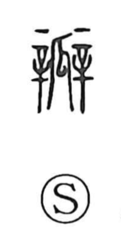

瓣

Kun: tane, hanabira | On: ben
seed ・ petal ・ valve
Explanation
A phono-semantic character: 瓜 (melon/gourd) supplies the sense, while 辯 (ben) provides the sound. The Shuowen defines it as the seeds inside a gourd, so its earliest meaning is “seed.” In later usage, the idea of discrete parts within a whole broadened to “flower petal,” and by extension to sectional parts like a valve.